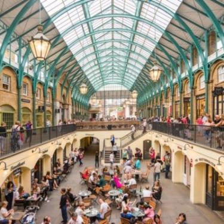
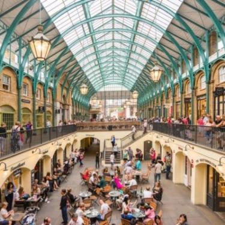

Le mie spese
| numero |
descrizione |
costo |
| 1 |
biglietto aereo |
120€ |
| 1 |
biglietto aereo |
120€ |
| 1 |
biglietto aereo |
120€ |
| Totale |
|
360€ |
Cose da fare
- Visitare la Tower of London χ
- visitare Greenwich√
- Ascoltare un artista di strada a Covert Garden √
- Mangiare il tipico fish and chips inglese χ
Info utili
- Numeri utili di emergenza
- 999-Emergenza
- 101-Numero polizia
- 111-Numero assistenza medica
- Hotel
- Nome Hotel: Buckingham Palace
- Indirizzo Hotel: Westminister London S W 1 1 A A Regno Unito
- Aereo
- Volo di andata: YI234X,ore 9.30 da Milano Malpensa
- Volo di ritorno: Y1236X, ore 18.30 da London Heathrow
Le foto
 
